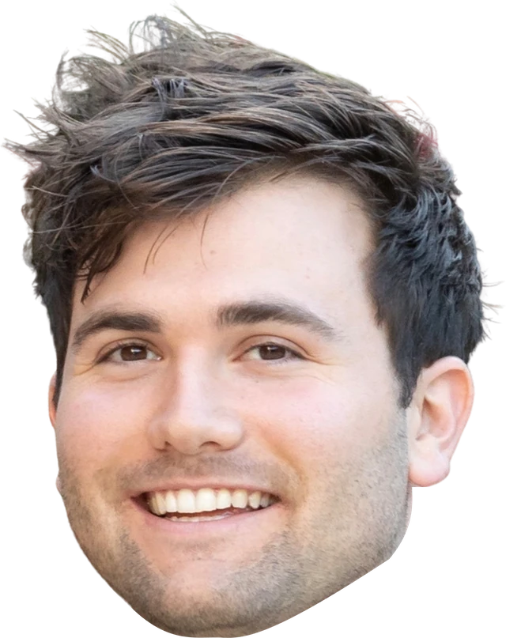

I design and build AI products, end to end.
10 years of product design & engineering
Each tape is a project
2020–26 · Co-founder, Head of Product & Technology
Step Up Tutoring
6,000+
active students
350,000+
tutoring hours delivered
200,000+
automations every month
Started in 2020, when the pandemic sent students home
Now running almost 7,000 hours of tutoring every week
Partners with the country's biggest school districts, including LA Unified and New York City Public Schools

About
I see what's needed, design the answer, and build it myself.
I studied Product Design at Stanford, then added full-stack engineering at Hack Reactor, finishing top of my cohort. For six years at Step Up I've turned manual work into AI systems, with tutors, students and families at the center.
EducationStanford, BS Product Design
CurrentlyCo-founder, Step Up Tutoring
Based inLos Angeles
Off hoursSongwriting, chess, escape rooms